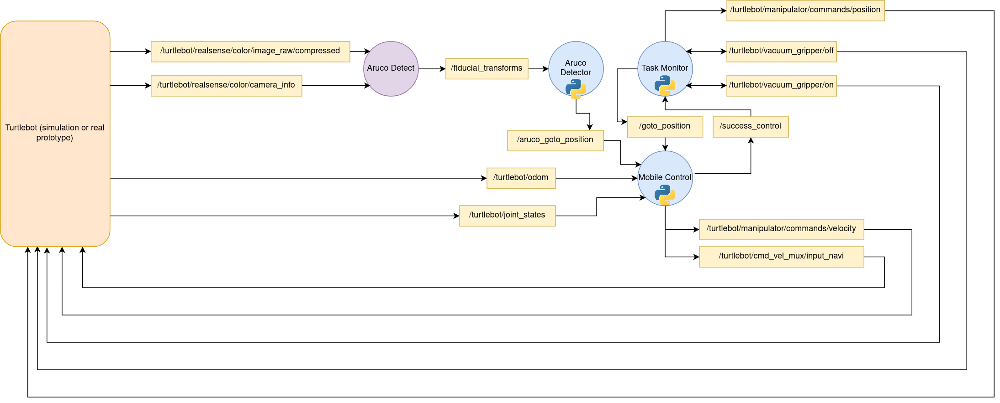

Implementation: Mobile Manipulation
The main objective of this project is to detect an object via ArUco markers, position the object with respect to the global cordinate frame and then execute the Task Priority Control Algorithm to make the robot reach the object, pick it and then transport it to another predefined location (storage place). The Task Priority control Algorithm allows to control multiple degrees of freedom with a given priority to constrain the behavior of the robot in a desired way.
